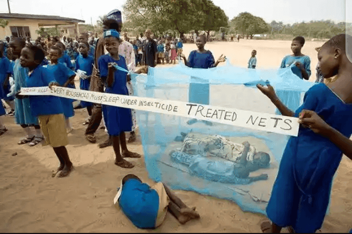

اليوم العالمي للملاريا في يولا
مكافحة الملاريا معاً
تركيز الحدث: رفع الوعي حول الوقاية من الملاريا وعلاجها مع تعزيز المبادرات الصحية المجتمعية.
نظرة عامة على الحدث
يتم الاحتفال باليوم العالمي للملاريا في يولا مع أنشطة مختلفة تهدف إلى تثقيف المجتمع حول الوقاية من الملاريا وعلاجها وتدابير المكافحة.

أنشطة الحدث
- محاضرات صحية: عروض من خبراء
- فحوص مجانية: فحوص الملاريا
- توزيع النِّعَال: أسرّة شبكية للحماية من البعوض
- التواصل المجتمعي: حملات من باب إلى باب
- المعسكرات الطبية: خدمات العلاج
المجالات الرئيسية
- استراتيجيات الوقاية
- الكشف المبكر
- خيارات العلاج
- التحكم البيئي
- مشاركة المجتمع
Educational Topics
- Prevention Methods:
- Using bed nets
- Environmental cleaning
- Mosquito control
- Recognition of Symptoms:
- Early warning signs
- When to seek help
- Treatment compliance
أثر المجتمع
- زيادة الوعي
- ممارسات وقاية أفضل
- تحسين الوصول إلى العلاج
- تقليل حالات الملاريا
- مجتمعات أكثر صحة